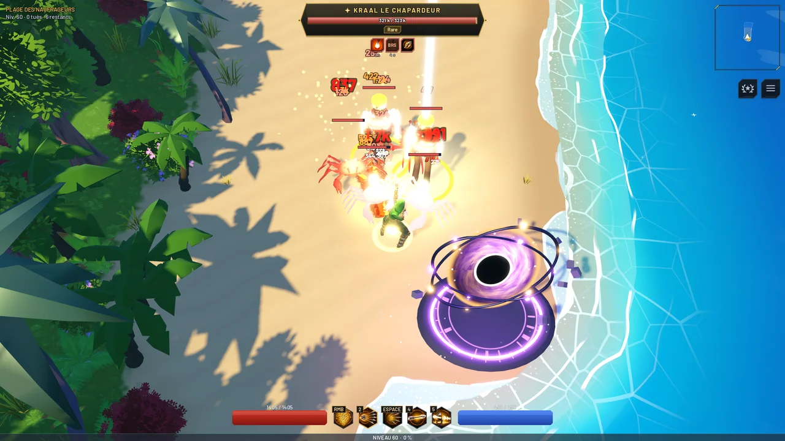

The Wreckers' Coast
A fourth act by the sea, a remade island, attributes, rethought talent trees and a new title screen.
A fourth act by the sea, an island remade from top to bottom, rethought talent trees and a brand new title screen. Safe crossing!
The Wreckers' Coast
Five zones of beaches, fords and lagoons, finally with terrain height, up to the wreck of a stranded galleon you explore from bow to stern. Three bosses, including the fearsome Captain Ashbeard.

The island of Hautecrête
The refuge becomes a real tropical island: waves and foam, footprints in the sand, a campfire, rocking boats and a pier to stroll along.

Strength, Dexterity, Intelligence
Each attribute point grants +0.5% damage to the skills that carry it. Attributes appear on items, in talents and on the character sheet, with five legendaries built around them.
Nightmares and title screen
Four longer Nightmare tiers, up to level 100. A new animated title screen, in Embers or Ashes, and a new font that stays sharp at every resolution.
Patch notes
Act IV: the Wreckers' Coast
- Five new zones (levels 45 to 57): beaches, fords to wade across, lagoons, rocks and the wreck of a stranded galleon you explore from bow to stern.
- The terrain finally has height: you climb dunes, wade knee-deep into the water, cross walkways.
- New enemies: shark sailors, reef crabs, buccaneers… and fins circling the fords.
- Three new bosses: King Foam-Claw, Jaws the boatswain and the fearsome Captain Ashbeard.
The island of Hautecrête
- The refuge becomes a real tropical island: a living sea with waves and foam, wet sand, footprints, a crackling campfire, palm trees, rocking boats and a pier to stroll along.
- The training dummy has its own islet, linked by a bridge.
Nightmares and campaign
- Four Nightmare tiers instead of ten, but longer: each tier replays the whole campaign and the zone level rises from one act to the next (Nightmare I: levels 58 to 73… up to level 100).
- Acts unlock in order: no jumping straight to act III with a new character.
Strength, Dexterity and Intelligence
- Three new attributes: each point grants +0.5% damage to the skills that carry that attribute (Strength for Cleave, Intelligence for Fireball, Strength and Dexterity for Whirlwind…).
- They appear on items, in the talent trees and on the character sheet; each skill's tooltip shows its attributes and the current bonus.
- Five new legendaries built around attributes: Wrestler's Belt, Scholar's Crown, Fox Stride, Titan's Grip and Ring of the Three Ways.
God trees
- Small nodes give generic damage: a tree stays useful after an element conversion.
- Nodes that reduce mana cost now come at the start of every tree.
- Some thirty new effects for end nodes and major talents, always mixing attack and defence: War Cry, Riposte, Ambush, Colossus, Back to the Wall, Transfusion, Close Guard…
- Guardian of the Bastion: your armour and your blocks become damage. Alchemist: less focused on elixirs, your regeneration feeds your blows.
- Major talents show their icon once chosen.
Legendaries and items
- Legendaries act on whole families: Phoenix Heart sets all your fire damage ablaze, Twin Dawn makes any melee attack strike twice…
- Legendaries that had no effect of their own received one.
- More Special and Ultimate affixes to forge, including a new rare ultimate that reduces aura reservation (helmet and chest).
- Clearly visible rarity frames in the inventory and equipment: you spot a legendary at a glance.
Characters
- Faces fixed (they took on the class colour) and outfits in each class's colours.
- New staves, wands and sceptres for spellcasters.
- An emblem for each class and an icon for each passive.
- Dedicated icons for every talent, ascendancy and active effect (no more empty boxes in the effects bar).
Title screen and selection
- A new animated title screen, with two moods to choose from: Embers or Ashes. Loading screens follow the chosen theme.
- Entrance animations, a transition to character selection and a glowing pedestal in your class colours.
- The character card shows your progress (“Act 2 · Nightmare I”) and your passive, also during creation.
- The patch notes can be read straight from the title screen.
Interface
- A new font, sharp at every resolution.
- Elixirs show their charges on the skill bar, like a cooldown.
- A wider forge: no more cut-off text in the possible results.
- Tabs that no longer jump on hover, lighter tooltips, the Forge button highlighted.
- In fullscreen, the chosen resolution applies to the game's rendering.
Balance
- An aura that would reserve more than 100% of your mana switches off instead of leaving you dry.
- Whirlwind: lower starting speed, but every channelling spin increases speed and area.
- Crush stuns less often; Fortification and Fragility work as advertised.
- Fighting bare-handed early in the game is no longer a punishment.
- Elixirs unlock for your character as soon as you find them; drinking again resets their duration.
Fixes
- The class tree could show 8/7 points and lock a point: fixed.
- Some temporary talent bonuses never ended.
- The Plaguebearer had lost its appearance.
- The target bar no longer flickers and the life bar no longer causes an error on death.